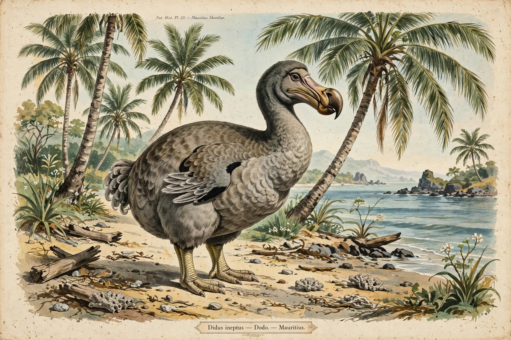

| Holocene extinction | |
|---|---|
 | |
| Other names | Sixth mass extinction, Anthropocene extinction |
| Period | Holocene (last ~11,700 years) to present |
| Primary cause | Human activity: habitat destruction, overexploitation, introduced species, pollution, climate change |
| Documented losses | Hundreds of vertebrate species since 1500; current rates estimated at tens to hundreds of times background |
The Holocene extinction, or sixth mass extinction, is an ongoing extinction event caused predominantly by human activity during the Holocene epoch. It encompasses the disappearance of large land mammals (megafauna) beginning in the late Pleistocene and early Holocene, the loss of hundreds of species since the start of the Industrial Revolution, and a broad contemporary decline in biodiversity that leading scientific assessments describe as a mass extinction comparable in scale — though not yet in total magnitude — to the five major extinction events of the geological past.
Unlike previous mass extinctions, which were driven by asteroid impacts, volcanism or climate shifts, the current crisis is attributed to a single species, Homo sapiens. The principal drivers, as summarised by the IPBES Global Assessment of 2019, are habitat destruction and land-use change (including deforestation and conversion to agriculture), direct overexploitation by hunting and fishing, human-caused climate change, pollution, and the spread of invasive species and diseases. Early waves of extinction followed human colonisation of new lands: within a few millennia of human arrival, Australia lost its giant marsupials, the Americas lost mammoths, giant ground sloths and other megafauna, and oceanic islands such as Madagascar, New Zealand and Hawaii lost most of their endemic birds, including the moa and the elephant birds.
Since 1500, the IUCN Red List documents the extinction of roughly 900 species, certainly an underestimate because most species are undescribed and many invertebrate losses go unrecorded. Studies of vertebrates estimate current extinction rates at tens to hundreds of times the "background" rate of the past millions of years. Around one million species are assessed as threatened with extinction, many within decades, and monitored wildlife populations have declined by an average of more than two-thirds since 1970 according to the WWF Living Planet Index. Some scientists argue the event is better characterised as a broader "defaunation" and biological annihilation in progress, and debate continues over whether it will ultimately reach the severity threshold (about 75% of species lost) of the Big Five mass extinctions.
Iconic Holocene extinctions include the dodo of Mauritius (by the late 17th century), Steller's sea cow (1768), the great auk (1852), the quagga (1883), the passenger pigeon (1914), the thylacine or Tasmanian tiger (1936), the Caribbean monk seal, the golden toad of Costa Rica (last seen 1989) and the baiji river dolphin, declared functionally extinct in 2006.
International responses include the Convention on Biological Diversity and its Kunming–Montreal Global Biodiversity Framework (2022), which aims to halt and reverse biodiversity loss and protect 30% of land and seas by 2030 ("30 by 30"), CITES controls on wildlife trade, protected-area networks, captive breeding and rewilding programmes.